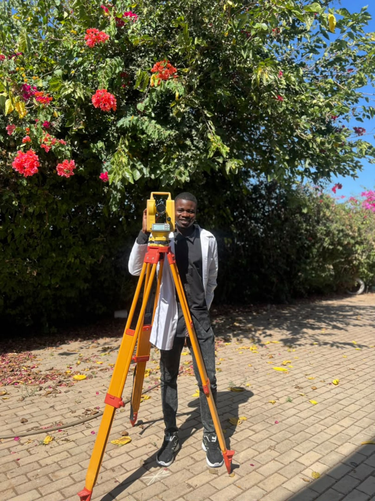

Formation et cours
Apprenez les fondamentaux de la topographie, les notions essentielles et les techniques de mesure.
Découvrir les cours →Explorez l'univers de la topographie, de la géomatique et des sciences de la mesure. Découvrez les connaissances, les techniques et les technologies qui permettent de représenter et de comprendre notre environnement.

TOPOMONDE est un espace de découverte et d'apprentissage consacré à la topographie et à la géomatique. Notre ambition est de rendre les connaissances accessibles aux étudiants, aux professionnels et à tous les passionnés des sciences de la mesure.
Découvrez les principales disciplines et technologies qui façonnent le monde de la mesure.
Apprenez les fondamentaux de la topographie, les notions essentielles et les techniques de mesure.
Découvrir les cours →Découvrez les instruments topographiques, leurs caractéristiques et leurs applications.
Découvrir les instruments →Explorez les méthodes de levé, d'implantation, de calcul et de traitement des données.
Explorer les méthodes →Découvrez les SIG, le GNSS, la cartographie numérique et les nouvelles technologies.
En savoir plus →Un espace pour développer ses connaissances et mieux comprendre les sciences géospatiales.
Des contenus organisés pour faciliter la compréhension des notions fondamentales.
Des explications sur les instruments, les méthodes et les applications du terrain.
Une ouverture sur les technologies modernes et les évolutions de la géomatique.
Des espaces pour approfondir vos connaissances et développer votre compréhension.
Retrouvez des notions, des explications et des contenus pédagogiques en topographie.
Accéder aux cours →Mettez vos connaissances à l'épreuve avec des exercices et des applications.
Voir les exercices →Commencez votre découverte des sciences de la mesure et de la géomatique avec TOPOMONDE.
Commencer l'exploration